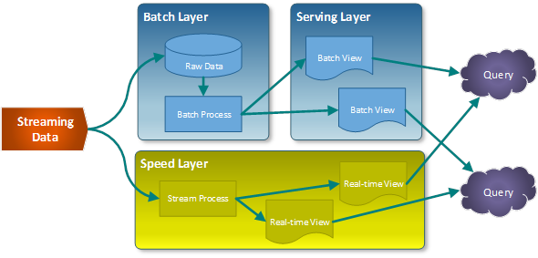
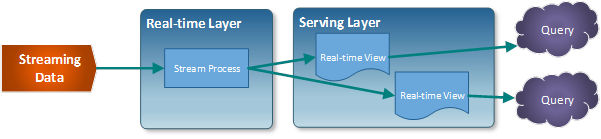

1. Introducción Big Data
1.1. Big Data
El Big Data es el análisis masivo de datos. Una cantidad de datos, tan sumamente grande, que las aplicaciones de software de procesamiento de datos que tradicionalmente se venían usando no son capaces de capturar, tratar y poner en valor en un tiempo razonable.
El mismo término también se refiere a las nuevas tecnologías que hacen posible el almacenamiento y procesamiento, además de al uso que se hace de la información obtenida a través de dichas tecnologías.
La gran popularidad del Big Data es debida principalmente a la oportunidad que ven en ella las grandes empresas. El hecho de poder analizar millones de datos de distintas procedencias como redes sociales, imágenes digitales, emails, encuestas, logs, señales de móvil, etc., permite que la toma de decisiones sea mucho más rápida, precisa y efectiva.
Big Data permite abordar problemas empresariales que antes eran insolubles.
- Generar información valiosa
- Perfeccionar campañas y técnicas de marketing
- Entrenar máquinas
- Modelado predictivo y otras aplicaciones avanzadas de análisis
- Reducir costos
- Ahorrar tiempo
- Comprender mejor las condiciones del mercado
- Vencer a grandes competidores y retener a clientes leales.
¿ Cuando considerar la utilización la arquitectura Big Data?
- Los datos son demasiado grandes para que los almacenes de datos tradicionales los procesen.
- Transformación y análisis de datos no estructurados.
- Necesidad de analizar datos en tiempo real con baja latencia.
1.2. Historia
El término ‘Big Data’ ha estado en uso desde principios de los años 90. Aunque no se sabe exactamente quién fue el primero en usar el término, la mayoría de las personas atribuyen a John R. Mashey (que en ese momento trabajaba en Silicon Graphics) por hacer popular el término.

1.3. Componentes de Big Data
Los componentes de Big Data constan de una variedad de elementos, pero no es necesario utilizarlos todos juntos para un caso de uso. Los componentes varían según el caso de uso empresarial.

1.3.1. Fuentes de Datos
Las fuentes incluyen una gran variedad de datos, como bases de datos relacionales tradicionales, archivos de registro de procesos empresariales y aplicaciones, y mensajes en tiempo real generados por eventos y dispositivos de IoT.
Los datos en Big Data pueden ser clasificados en tres tipos según su origen:
- Generados por máquinas: procedentes de sensores (GPS, contadores…), Web Log Data (redes, aplicaciones…), procedentes de puntos de venta (códigos de barras de un producto) y financieros (operaciones bancarias).
- Generados por personas: formularios, registros de contabilidad…
- Datos externos: redes sociales, patentes, datos web, datos móviles, etiquetas RFID (rastreo electrónico) y códigos de barras, datos de ubicación, sensores de datos, entre otros.
Según su estructura se pueden clasificar en tres tipos:
- Datos estructurados: son aquellos que se encuentran ordenados y organizados en una estructura predefinida, cómo una tabla o una base de datos relacional. Estos datos son fáciles de gestionar y analizar, ya que su estructura permite una mayor predictibilidad. Ejemplos de datos estructurados incluyen registros en tablas, ficheros XML asociados a un esquema, y facturas autogeneradas al realizar una compra.
- Datos semiestructurados: son aquellos que tienen cierta estructura, pero no están organizados en una estructura rígida cómo los datos estructurados. Ejemplos de datos semiestructurados incluyen documentos JSON y XML sin esquema asociado.
- Datos no estructurados: son aquellos que no tienen una estructura predefinida y pueden ser difíciles de gestionar y analizar. Ejemplos de datos no estructurados incluyen publicaciones en redes sociales, vídeos, imágenes, y texto libre.

1.3.2. Almacenamiento de Datos
El almacenamiento de este gran volumen de datos generalmente implican sistemas de almacenamiento distribuidos de gran capacidad que facilitan el análisis de esa inmensa cantidad de información.
Hay muchas opciones disponibles para almacenar grandes volúmenes de datos.
- Los sistemas de archivos distribuidos, como Hadoop Distributed File System (HDFS) y Google File System (GFS), son una opción popular para almacenar grandes conjuntos de datos en múltiples servidores.
- Los servicios de almacenamiento en la nube, como Amazon S3 y Microsoft Azure Blob Storage, también son opciones populares para almacenar datos en la nube.
La gestión efectiva de los datos es esencial para garantizar su integridad y disponibilidad. Esto incluye:
- La implementación de medidas de seguridad adecuadas para proteger los datos contra el acceso no autorizado
- La realización de copias de seguridad regulares para garantizar la recuperación en caso de pérdida de datos
- La implementación de políticas y procedimientos para garantizar que los datos se manejen de manera responsable y ética.
Esto último nos lleva al concepto de gobernanza de datos que abarca las políticas y procedimientos que se implementan para garantizar que los datos de una organización sean precisos y que se manejen correctamente cuando se ingresan, almacenan, manejan, acceden y eliminan.
Las responsabilidades de gobernanza de datos incluyen establecer la infraestructura y tecnología, configurar y mantener procesos y políticas, e identificar a las personas (o cargos) de una organización que tienen la autoridad y responsabilidad de gestionar y salvaguardar tipos específicos de datos.
1.3.3. Ingesta de Mensajes en Tiempo Real
La ingestión de datos en tiempo real incluye mecanismos para recibir mensajes en streaming, almacenarlos y procesarlos para obtener conocimientos.
Los componentes que facilitan la recepción de mensajes actúan cómo un búfer mientras los datos se envían a un almacenamiento para su procesamiento.
1.3.4. Procesamiento por Lotes
El procesamiento por lotes generalmente implica conjuntos de datos grandes que se procesan secuencialmente para agregar, filtrar y preparar los datos para un análisis posterior.
Este enfoque puede ser útil cuando se trata con datos históricos o cuando se realizan análisis complejos que requieren más tiempo.
Algunos de los componentes de procesamiento por lotes incluyen Azure Data Factory, Azure Batch, U-SQL (Azure Data Lake Analytics), clústeres HDInsight Hadoop y Spark
1.3.5. Procesamiento en Tiempo Real
El procesamiento en tiempo real del Big Data implica analizar datos a medida que se generan para tomar decisiones o desencadenar acciones en tiempo real.
Por ejemplo, el procesamiento en tiempo real puede utilizarse para monitorear feeds sociales en busca de menciones de una marca o producto en particular.
Casos de Uso en Tiempo Real
Algunos de los casos de uso en tiempo real para las arquitecturas mencionadas anteriormente son:
- Twitter y Facebook utilizan la arquitectura Lambda para llevar a cabo análisis en tiempo real y por lotes de sus mensajes y publicaciones.
- Los software integrados en los coches eléctricos envían datos en tiempo real (a través de dispositivos IoT/Edge) al fabricante, que luego realiza análisis de datos de sensores en tiempo real y por lotes para mejorar el rendimiento de los coches eléctricos. Esto se basa en la arquitectura Lambda.
- El sector de las telecomunicaciones tiene grandes volúmenes de datos que se pueden analizar en tiempo real para identificar y solucionar anomalías relacionadas con la red. Los datos pueden alimentar modelos de ML en tiempo real y el modelo de ML puede sugerir recomendaciones que se pueden implementar mediante flujos de IA. Esto suele seguir la arquitectura Kappa.
1.3.6. Procesamiento Hibrido
Es una mezcla de los dos anteriores y tiene dos posibles arquitecturas:
1.3.6.1. Lambda
Su objetivo es tener un sistema robusto tolerante a fallos que sea linealmente escalable y que permita realizar escrituras y lecturas con baja latencia.

La nueva información recogida por el sistema se envía tanto a la capa de batch como a la capa de streaming (Speed Layer).
En la capa batch (Batch Layer) se gestiona la información en crudo. Los datos nuevos se añaden a los ya existentes. Seguidamente se hace un tratamiento mediante un proceso batch cuyo resultado serán las denominadas Batch Views.
La capa que sirve los datos(Serving Layer), indexa las Batch Views para que puedan ser consultadas con baja latencia.
La capa de streaming (Speed Layer), compensa la alta latencia de las escrituras que ocurre en la serving layer y solo tiene en cuenta los datos nuevos.
Finalmente, la respuesta a las consultas realizadas se construye combinando los resultados de las Batch Views y de las vistas en tiempo real (Real-time Views).
1.3.6.2. Kappa
Su objetivo es eliminar la capa batch dejando solamente la capa de streaming.
Esta capa, a diferencia de la de tipo batch, no tiene un comienzo ni un fin desde un punto de vista temporal y está continuamente procesando nuevos datos a medida que van llegando.
Sus cuatro pilares principales son:
- Todo es un stream: las operaciones batch son un subconjunto de las operaciones de streaming, por lo que todo puede ser tratado como un stream.
- Los datos de partida no se modifican: los datos son almacenados sin ser transformados y las vistas se derivan de ellos. Un estado concreto puede ser recalculado puesto que la información de origen no se modifica.
- Solo existe un flujo de procesamiento: puesto que mantenemos un solo flujo, el código, el mantenimiento y la actualización del sistema se ven reducidos considerablemente.
- Posibilidad de volver a lanzar un procesamiento: se puede modificar un procesamiento concreto y su configuración para variar los resultados obtenidos partiendo de los mismos datos de entrada

1.3.7. Almacén de Datos Analíticos (Data Warehouse)
Los almacenes de datos analíticos o Data Warehouses en inglés, son sistemas de almacenamiento y gestión de datos diseñados específicamente para la recopilación, organización y análisis de grandes volúmenes de información empresarial.
Estos almacenes están optimizados para facilitar la consulta y el procesamiento de datos con el objetivo de obtener información significativa para la toma de decisiones.
Algunas de sus características son:
- Consolidación de datos
- Estructura optimizada
- Historización
- Rendimiento
- Herramientas de consulta y reporting
- Seguridad y control de acceso
1.3.8. Análisis e Informes
1.3.8.1. Análisis
Tipos de análisis de big data:
- Predictivo
- El análisis predictivo implica utilizar técnicas estadísticas para hacer predicciones sobre eventos futuros basándose en datos históricos. Este enfoque puede aplicarse para generar conocimientos sobre tendencias o comportamientos futuros.
- De diagnóstico
- El análisis de diagnóstico utiliza algoritmos para descubrir patrones y relaciones dentro de grandes conjuntos de datos. Este enfoque puede aplicarse para extraer información útil de grandes volúmenes de datos no estructurados o semiestructurados.
- Descriptivo
- El análisis descriptivo es un método de análisis de datos que se utiliza para resumir y describir sus características principales. Se utiliza comúnmente para proporcionar una visión general de los datos y para identificar patrones y tendencias.
Uso
El análisis descriptivo puede utilizarse para obtener información a partir de conjuntos de datos grandes y complejos. Por ejemplo, una empresa podría utilizar el análisis descriptivo para entender la demografía de su base de clientes o para identificar patrones en el comportamiento de los clientes.
- Prescriptivo con Big Data
- El análisis prescriptivo es un tipo de análisis de datos que utiliza técnicas avanzadas de análisis, como el aprendizaje automático y los algoritmos de optimización, para sugerir acciones que se pueden tomar para lograr un resultado deseado.
Uso
El análisis prescriptivo puede utilizarse para tomar decisiones basadas en datos a partir de la información obtenida a partir de conjuntos de datos grandes y complejos. Por ejemplo, una empresa podría utilizar el análisis prescriptivo para optimizar su cadena de suministro o para determinar la mejor estrategia de precios para sus productos.
1.3.8.2. Informes o Visualización de datos
La visualización de datos es la presentación de datos en formato ilustrado o gráfico. Permite a los tomadores de decisiones ver la analítica presentada de forma visual, de modo que puedan captar conceptos difíciles o identificar nuevos patrones. Con la visualización interactiva, se puede llevar el concepto un paso adelante utilizando tecnología para profundizar en diagramas y gráficas para observar mayor detalle, cambiando de forma interactiva qué datos se ven y cómo se procesan.
Hay muchas herramientas disponibles para la visualización de Big Data. Algunas de las herramientas más populares son Tableau, Power BI, Infogram, ChartBlocks, Datawrapper y Ploty. Estas herramientas permiten crear tablas, gráficos, mapas y otros tipos de visualizaciones para ayudar a comprender y comunicar los datos.
La visualización de datos es importante porque permite transmitir conceptos de manera universal y rápida. También puede ayudar a identificar áreas que necesitan atención o mejoras y esclarecer qué factores influencian el comportamiento de los clientes.
1.3.9. Orquestación
Para lograr un procesamiento por lotes o en tiempo real exitoso, la orquestación del flujo de datos es muy importante para construir procesos por lotes o en tiempo real confiables y resistentes a fallos.
1.3.10. Aprendizaje Automático
Big data y aprendizaje automático son dos campos estrechamente relacionados y complementarios.
- Big data se refiere a conjuntos de datos extremadamente grandes y complejos que son difíciles de procesar utilizando métodos tradicionales.
- El aprendizaje automático, por otro lado, es una rama de la inteligencia artificial que se enfoca en desarrollar algoritmos que permitan a las máquinas aprender de los datos y mejorar su rendimiento con el tiempo.
El aprendizaje automático aprovecha el big data para entrenar modelos más precisos y confiables. Cuanto más datos haya disponibles, más precisos y confiables serán los modelos del aprendizaje automático. El aprendizaje automático tiene aplicaciones amplias en el procesamiento y análisis del big data, cómo la clasificación y categorización automática de datos, la detección de anomalías y la predicción de resultados futuros.
La combinación de big data y aprendizaje automático ofrece beneficios significativos. Permite descubrir información valiosa oculta en grandes volúmenes de datos, mejorar la toma de decisiones basada en datos, automatizar tareas y optimizar procesos empresariales.
1.4. Las V's de la Arquitectura Big Data
El concepto de "Las V's del Big Data" se refiere a las características clave que describen los datos masivos utilizados en el análisis de datos. A lo largo del tiempo, diferentes fuentes y expertos han propuesto diferentes cantidades de "V's" para describir estas características. A continuación, se mencionan las tres versiones más comunes:
Las 3 V's del Big Data:
-
Volumen: Hace referencia a la cantidad de datos generados y almacenados. En el Big Data, se manejan conjuntos de datos extremadamente grandes.
-
Variedad: Se refiere a la diversidad de tipos de datos. Estos pueden incluir texto, imágenes, audio, video, datos estructurados y no estructurados.
-
Velocidad: Indica la rapidez con la que se generan y se deben analizar los datos. En el Big Data, se trata de procesar datos en tiempo real o casi en tiempo real.
Las 5 V's del Big Data:
Además de las 3 V's mencionadas anteriormente, algunas fuentes también incluyen:
-
Veracidad: La calidad y precisión de los datos son esenciales. Los datos deben ser confiables y veraces para tomar decisiones precisas.
-
Valor: Finalmente, el valor se refiere a la capacidad de extraer información valiosa y conocimiento útil de los datos. Los datos deben ser relevantes y aportar valor a una organización o proyecto.
Las 7 V's del Big Data:
Además de las 5 V's mencionadas anteriormente, algunas fuentes también incluyen:
-
Viabilidad: Se refiere a la capacidad de llevar a cabo proyectos de Big Data de manera factible desde el punto de vista técnico y económico.
-
Visualización: La capacidad de representar y comunicar los datos de manera efectiva a través de gráficos y herramientas visuales.
Estas V's son importantes para comprender las características esenciales de los datos masivos y cómo gestionarlos para obtener el máximo valor
1.5. Infraestructura
Una infraestructura para Big Data debe facilitar la recopilación, el almacenamiento y el análisis de grandes volúmenes de datos, que pueden estar en diferentes formatos y generándose en tiempo real. Para ello, se utilizan tecnologías y servicios especiales que han sido creados específicamente para dar solución al procesamiento de estos enormes conjuntos de datos.
Algunos de los principales elementos de hardware y software que integran una solución arquitectónica de Big Data son:
- Hardware: servidores, dispositivos de almacenamiento, redes de alta velocidad.
- Software: sistemas operativos, bases de datos, herramientas de análisis y visualización de datos.
Estos son algunos ejemplos de infraestructuras para procesar el Big Data:
- Apache Hadoop: una de las soluciones más conocidas para analizar Big Data, que utiliza un marco de trabajo de código abierto para almacenar y procesar grandes conjuntos de datos.
- Apache Spark: esta herramienta permite almacenar gran parte de los datos de procesamiento en la memoria y en el disco, lo que se traduce en una mayor rapidez.
- Bases de datos NoSQL: como Cassandra, son utilizadas para almacenar y gestionar grandes volúmenes de datos no estructurados.
La infraestructura para procesar el Big Data debe ser capaz de manejar grandes volúmenes de datos y proporcionar herramientas para su análisis y visualización.